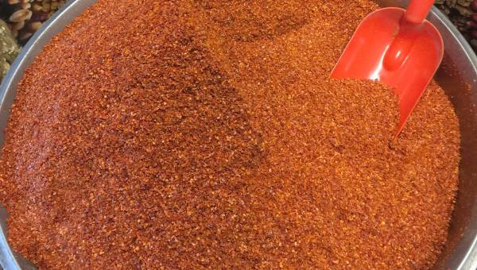

Aromaları ile yemeklere lezzet katan baharatların sağlık için de sayısız faydası bulunuyor. Şeker ve kolesterol düzenlemekten, metabolizma güçlendirmeye, kanser hücrelerinin baskılanmasından tümörün küçülmesine katkı sağlayanlara kadar birçok farklı alanda fayda sağlayan baharatlar doğru kullanılmadığında ise sağlığı tehdit edebiliyor. Özellikle kronik hastalıkları olanların baharatları daha dikkatli kullanması gerektiğini söyleyen Anadolu Sağlık Merkezi Beslenme ve Diyet uzmanları, zencefil, tarçın, biber, karanfil gibi günlük hayatın içindeki baharatların kullanımı ile ilgili önemli bilgiler paylaştı.
Zencefil regl ağrılarını dindiriyor, kanserde tümörün küçülmesine yardımcı oluyor
Antibakteriyel, antiviral, antienflamatuvar olarak kullanılan zencefil, çay olarak tüketildiğinde hamilelik dönemi bulantılarında kullanılabilecek en güvenilir çareye dönüşür. Zencefil çayı aynı zamanda uzun yolda ortaya çıkan mide bulantılarında da etkilidir. Antitümör etkisi sayesinde tedavisi zor olan kanser türlerinde doktora danışılarak tüketilen zencefil tümörün büyümesini baskılamaya yardımcı olabilir. Spor yapan kadınlarda kas ağrılarını ve adet dönemindeki ağrıları azalttığına dair çalışmalar bulunan zencefil solunum yolu hastalıklarında, öksürük, grip ve soğuk algınlığına birebirdir. Bağışıklık sistemini güçlendirir. Fakat kan basıncı ve şeker ile ilgili ilaç kullananlar için sakıncalı olabileceği unutulmamalıdır.
Tarçın hafızayı güçlendiriyor
Kan şekerini dengelemesiyle tanınan ve bu özelliği ile diyabetik hastalara önerilen tarçın bazı diyabet ilaçları ile etkileşime girebilir. Diyabet hastalarının tarçın kullanımı ile ilgili doktorlarına danışması önemlidir. Kolesterol üstünde de dengeleyici etkisi olan tarçının antioksidan, antiseptik ve antibakteriyel özellikleri de vardır. Kanın pıhtılaşmasını önlemeye yardımcı olan tarçın zengin lif içeriği sayesinde sindirimi kolaylaştırır. Lösemide kanser hücrelerinin çoğalma riskini düşürür. Tarçın sakızı çiğnemek veya koklamak hafızayı güçlendirir, Alzheimer gibi hastalıklarda yardımcı olarak kullanılabilir.
Zerdeçal, osteoporoza karşı koruyor
Zencefil ailesinden olan ve Hindistan safranı olarak da bilinen zerdeçalın kullanım alanları da safranla benzerlik gösterir. Antienflamatuvar, antioksidan, antitümör özellikleri olan zerdeçal Alzheimer gibi hastalıklarda kullanılır. Kolon, prostat, pankreas, meme kanserlerinde tedaviye ek olarak kullanılabilir, ancak öncesinde hekime danışmak önemlidir. Artrit, pankreatit, enflamatuvar bağırsak hastalıklarında ağrıyı azaltıcıdır. Safra taşına karşı doğal bir koruyucudur. Kan basıncını düzenler, osteoporoza karşı da koruyucu özellikleri bulunur. Zerdeçalı günlük beslenmesine dahil etmek isteyenler pilav, makarna, et yemekleri, yumurta, çorba gibi yemeklere ekleyebilir.
Omega-3, omega-6, karanfil şişkinliği önlüyor
En çok diş ve diş eti hastalıklarına önerilen karanfil, lokal anestezik olarak da kullanılabilir. Ağız kokusu için de etkili olan karanfil, su ve çayda tüketildiğinde şişkinliğe iyi gelir. Bitkilerde çok nadir görülen omega-3 ve omega-6 barındırmasıyla dikkat çeken zencefil, soğuk algınlığı, öksürük gibi bağışıklık sistemi hastalıklarında da kullanılabilir. Siyah noktalar, sivilceler, cilt lekeleri için birebirdir. Baharat ve çay olarak tüketilmesi önerilen karanfil, yağ olarak tüketildiğinde yarardan çok zarara neden olan bir ürüne dönüşebilir. Mutlaka bir uzmana danışılarak kullanılması gereken karanfil yağı; direkt olarak içilmemeli, cilde sürülmemeli ve seyrelterek kullanılmalıdır. Çocukların kesinlikle kullanmaması gereken karanfil yağı mide ve bağırsakta dönüşü olmayan ciddi yan ektilere neden olup vücutta tahribat yaratabilir.
Siyah nokta ve sivilcelere karşı: Kimyon
Kan şekerini dengeleyen kimyon, cildi düzenler, siyah nokta, sivilce, yaşlılık kırışıklıklarının tedavisine yardımcıdır. Yüksek demir içeriği sebebiyle kansızlık tedavisinde oldukça etkili olan kimyon, astımla savaşır ve bağışıklık sistemini güçlendirir. Aşırı tüketimi karaciğer ve böbreklere zarar verebilen kimyonun hamilelik döneminde de düşüklere neden olabileceği için kullanılmaması önerilir.
Çalışmayan bağırsaklar için keten tohumu
Omega 3 yağ asitleri ve diyet lifi açısından zengin olan keten tohumu sindirim sistemini ve bağırsakların sağlıklı çalışmasını destekler. Kan şekeri ve kolesterolün dengede kalmasına yardımcıdır. Bu özelliğiyle kalp ve damar hastalıklarına karşı da koruyucu olan keten tohumu, meme kanseri ve prostat kanseri riskini düşürür. Suda bekletilip salatalarda kullanılabilir.
Chia kolesterolü dengeler
Omega 3, 6 ve lif içeriği bakımından zengindir. Kan şekerini ve kolesterolü dengeler. Antioksidan özelliği sebebiyle kanser riskini düşürür. Süt ve suda jelleşme özelliği ile puding, sütlü yumurta gibi sevilen birçok tarifte kullanılabilir. Midede şiştiği için açlık hissini yatıştırır. Tansiyon hastaları uzmana danışarak kullanmalıdır.
Pul biber bağışıklık sistemi ve metabolizmayı güçlendirir
Antienflamatuvar ve gaz giderici olarak kullanılan pul biber içindeki bileşikler sayesinde birlikte yenilen diğer besinlerin vitamin ve mineraller emilimini de arttırır. Yüksek miktarda C vitamini içerdiğinden doğal antibiyotik olarak tanınan pul biberin vücut için mucizevi bir besin olduğunu söyleyebiliriz. Bağışıklık sistemi ve metabolizmayı güçlendiren pul biber antidepresan olarak kullanılabilir. Kanser hücrelerinin bastırılmasında da yardımcı olan biberin bazı ilaçlarla etkileşime girebileceği unutulmamalıdır.